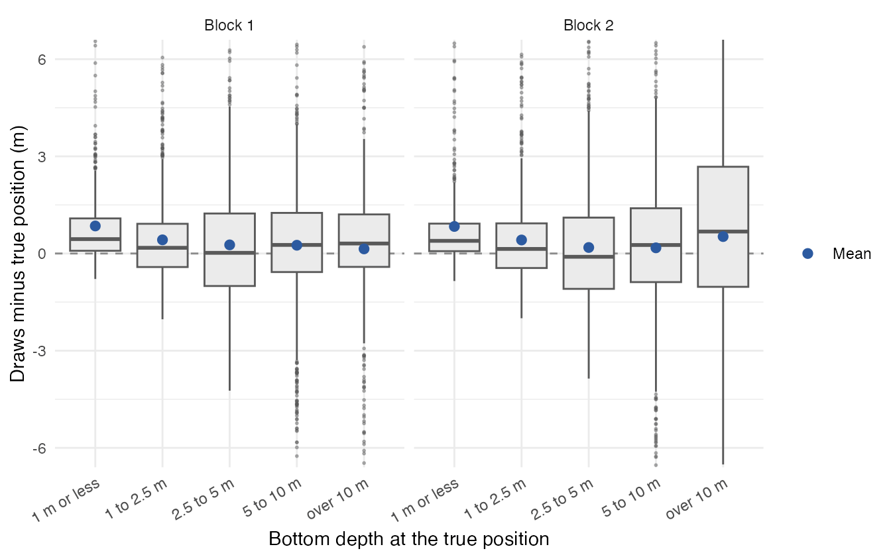
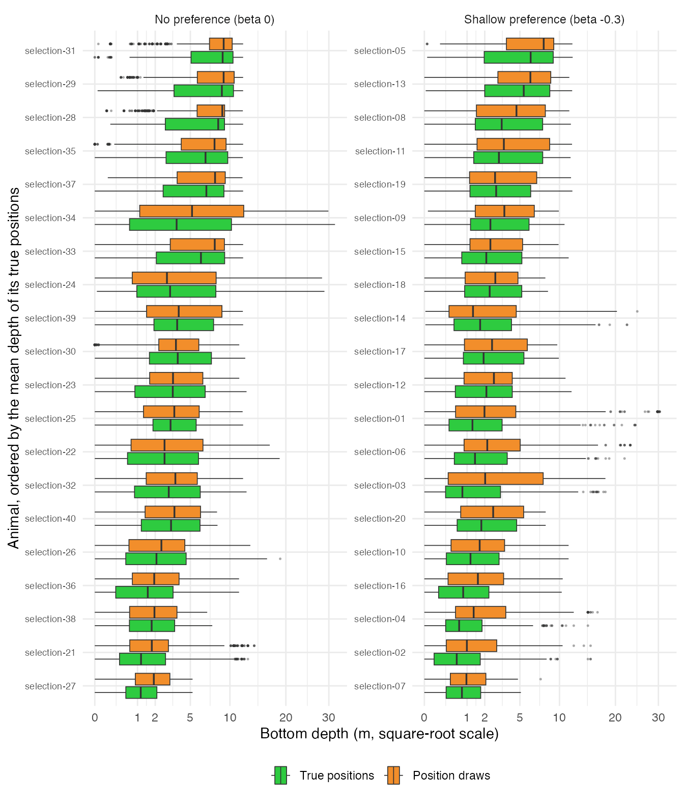
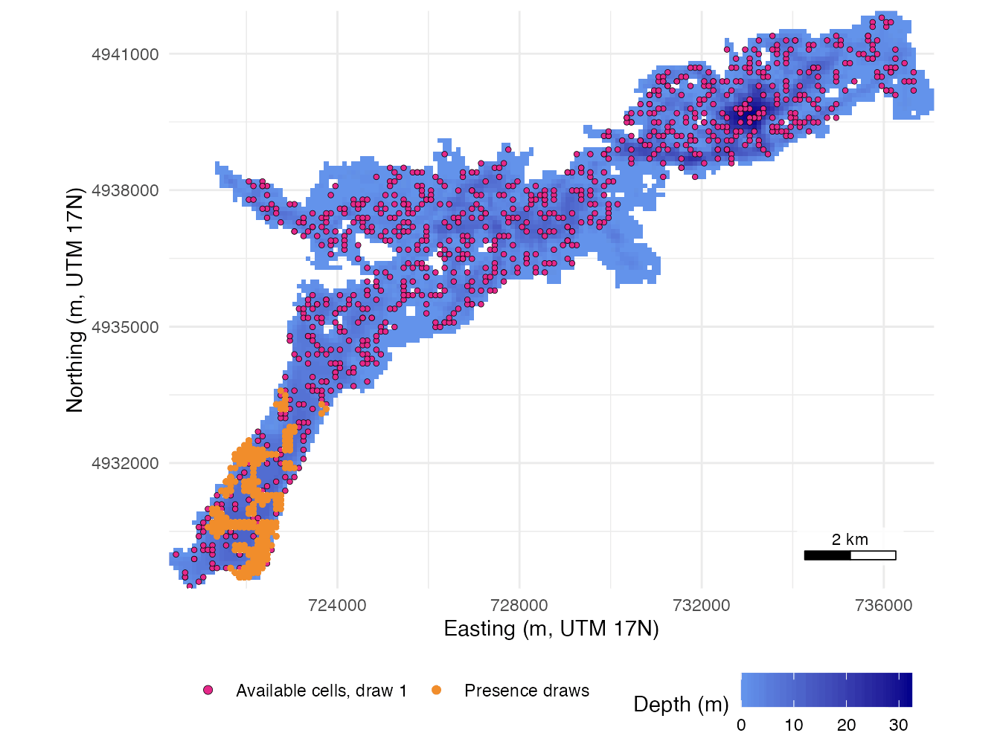
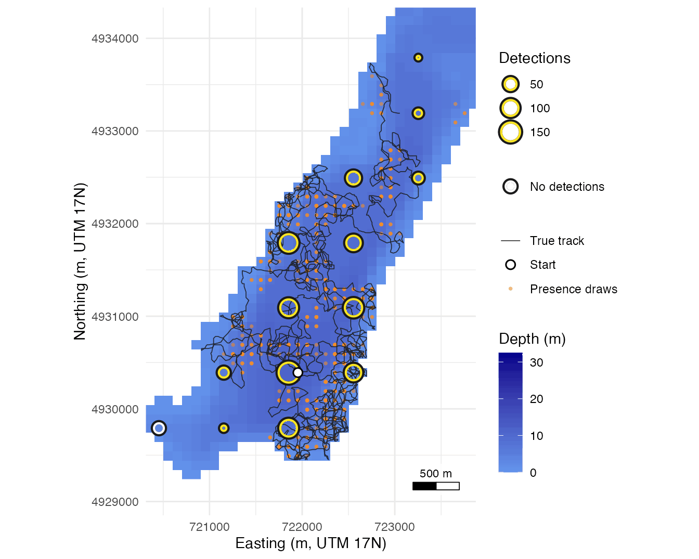
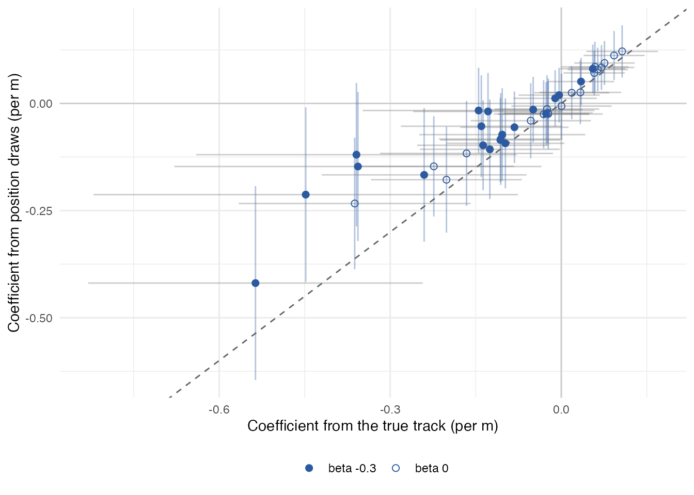

Habitat selection: depth use from hourly positions
Source:vignettes/habitat-selection.Rmd
habitat-selection.RmdHourly location surfaces can be used in a habitat-selection analysis: the positions of an animal in the hours it was heard are set against the water available to it, to ask which depths it used more than their availability. This page tests that use on simulated animals whose preference for depth is known, comparing the answer from position estimates with the answer from the true track. A position draw is one water cell drawn from an hour’s location surface with probability equal to the cell’s posterior probability, so a set of draws from each detected hour represents the hour’s uncertainty in the analysis (the model). The page needs the survival R package for the conditional logit; Get started shows how the surfaces behind the draws are built.
On average, position draws from hourly surfaces put a simulated
animal 0.35 m deeper than it was, most in water 1 m deep or less, and a
preference for shallow water comes back at about half its size (0.51 and
0.54 of the true track’s coefficient in two blocks of animals). This
page shows both on stoney_selection, 40 animals simulated
for 48 hours on 70 Stoney Lake receivers, with availability drawn from
the array’s detection surface as in positionR 1.x.
# Attach detfield, survival for the conditional logit, and ggplot2
library(detfield)
library(survival)
library(ggplot2)
# Hour by hour on 70 receivers: the mean bottom depth of the 20 position
# draws minus that of the 20 true points (every third minute)
trial_hours <- stoney_selection$hours
trial_hours$shift_m <- trial_hours$drawn_m - trial_hours$true_m
trial_hours$band <- cut(trial_hours$true_m, c(-Inf, 1, 2.5, 5, 10, Inf),
labels = c("1 m or less", "1 to 2.5 m", "2.5 to 5 m",
"5 to 10 m", "over 10 m"))
shift_by_band <- aggregate(shift_m ~ block + band, data = trial_hours,
FUN = function(m) c(mean = mean(m), hours = length(m)))
shift_by_band <- do.call(data.frame, shift_by_band)
names(shift_by_band) <- c("block", "band", "mean_m", "hours")
shift_by_band$mean_m <- round(shift_by_band$mean_m, 2)
shift_by_band
#> block band mean_m hours
#> 1 1 1 m or less 0.85 402
#> 2 2 1 m or less 0.84 499
#> 3 1 1 to 2.5 m 0.42 1023
#> 4 2 1 to 2.5 m 0.42 1048
#> 5 1 2.5 to 5 m 0.27 1224
#> 6 2 2.5 to 5 m 0.19 1120
#> 7 1 5 to 10 m 0.26 1446
#> 8 2 5 to 10 m 0.18 1189
#> 9 1 over 10 m 0.14 384
#> 10 2 over 10 m 0.52 537
# Hours beyond 6 m either way, which the figure's axis cuts off
sum(abs(trial_hours$shift_m) > 6)
#> [1] 194
# Draw the hourly differences by true depth band, one panel per block
ggplot(trial_hours, aes(band, shift_m)) +
geom_hline(yintercept = 0, colour = "grey55", linetype = "dashed") +
geom_boxplot(outlier.size = 0.4, outlier.alpha = 0.4, fill = "grey92",
colour = "grey35") +
stat_summary(aes(colour = "Mean"), fun = mean, geom = "point", size = 2.2) +
scale_colour_manual(name = NULL, values = c(Mean = "#2C5AA0")) +
facet_wrap(~ block, labeller = as_labeller(c(`1` = "Block 1",
`2` = "Block 2"))) +
coord_cartesian(ylim = c(-6, 6)) +
labs(x = "Bottom depth at the true position",
y = "Draws minus true position (m)") +
theme_positionr() +
theme(axis.text.x = element_text(angle = 30, hjust = 1))
Per detected hour on 70 receivers, mean bottom depth of 20 position draws minus that of the 20 true cells (every third minute); 100 animals per block, 20 at each of five preferences. 194 of 8,872 hours lie beyond the 6 m axis limits.
On average the draws read deeper than the true position: by 0.34 m over the 4,479 detected hours of block 1 and by 0.35 m over the 4,393 of block 2. Hour by hour it is less one-sided: 59.1% and 57.8% of hours read deeper, and in water 2.5 to 5 m about half read deeper and half shallower (50.7% and 47.7% deeper). The mean shift is largest in water 1 m deep or less, 0.85 m and 0.84 m, where a draw can only miss toward the open water, which is deeper. It is no larger in hours heard by one receiver (0.21 m and 0.12 m) than in hours heard by two or more (0.36 m and 0.39 m).
In water over 10 m the mean shift is 0.14 m in block 1 and 0.52 m in block 2, and it differs by group. In block 2, 340 of the 537 hours there come from the animals with beta = +0.3, whose draws read 0.71 m deeper; the animals with no preference read 0.41 m shallower there (69 hours). The shore explains the shift in shallow water only; the shift in deep water is not explained.
The study
stoney_selection is a list:
# The parts of the included study, and the animals by preference
study <- stoney_selection
names(study)
#> [1] "receivers" "detections" "tags" "track" "presence"
#> [6] "coverage" "truth" "trial" "hours"
table(beta = study$tags$beta)
#> beta
#> -0.3 0
#> 20 20The position draws are the trial’s own for these animals: 20 cells
per detected hour, drawn from each hour’s location surface with
sample_locations(). Get started
builds the field and the surfaces they come from.
# One row per animal, detected hour and draw
presence <- study$presence
head(presence, 3)
#> animal_id bin_start draw cell x y
#> 1 selection-01 2024-06-01 1 831 736154 4941491
#> 2 selection-01 2024-06-01 2 832 736254 4941491
#> 3 selection-01 2024-06-01 3 1001 736354 4941391
writeLines(strwrap(attr(presence, "estimand"), 72))
#> location of the animal in each detected binDepth used: true track and position draws
The true points are the animal’s cells at every third minute of each detected hour, 20 per hour; both sets are read on bottom depth:
# Bottom depth in metres from the lake raster
lake <- terra::rast(system.file("extdata", "stoney_depth.tif",
package = "detfield"))
depth <- abs(lake)
names(depth) <- "depth_m"
# The true cells at minutes 0, 3, ..., 57 of an animal's detected hours
true_points <- function(id) {
minutes <- study$track[study$track$animal_id == id, ]
minutes$bin_start <- as.POSIXct(trunc(minutes$datetime, "hours"))
minute <- as.numeric(format(minutes$datetime, "%M"))
keep <- minutes$bin_start %in% presence$bin_start[presence$animal_id == id] &
minute %% 3 == 0
xy <- terra::xyFromCell(lake, minutes$cell[keep])
data.frame(animal_id = id, bin_start = minutes$bin_start[keep],
draw = minute[keep] / 3 + 1, cell = minutes$cell[keep],
x = xy[, 1], y = xy[, 2])
}
truth <- do.call(rbind, lapply(study$tags$animal_id, true_points))
# Depth of every true point and every draw, with the animal's preference
depth_of_cell <- terra::values(depth, mat = FALSE)
depth_used <- rbind(
data.frame(animal_id = truth$animal_id, set = "True positions",
depth_m = depth_of_cell[truth$cell]),
data.frame(animal_id = presence$animal_id, set = "Position draws",
depth_m = depth_of_cell[presence$cell])
)
depth_used$beta <- study$tags$beta[match(depth_used$animal_id,
study$tags$animal_id)]
table(depth_used$set)
#>
#> Position draws True positions
#> 35700 35700
# Order the animals by their mean true depth, one panel per preference
true_mean <- tapply(depth_used$depth_m[depth_used$set == "True positions"],
depth_used$animal_id[depth_used$set == "True positions"],
mean)
depth_used$animal_id <- factor(depth_used$animal_id,
names(sort(true_mean)))
depth_used$set <- factor(depth_used$set, c("True positions",
"Position draws"))
depth_used$group <- ifelse(depth_used$beta == 0, "No preference (beta 0)",
"Shallow preference (beta -0.3)")
ggplot(depth_used, aes(depth_m, animal_id, fill = set)) +
geom_boxplot(outlier.size = 0.3, outlier.alpha = 0.3, linewidth = 0.3,
position = position_dodge(width = 0.8), width = 0.7) +
facet_wrap(~ group, scales = "free_y") +
scale_fill_manual(values = c("#2ECC40", "#F28E2B"), name = NULL) +
scale_x_continuous(trans = "sqrt", breaks = c(0, 1, 2, 5, 10, 20, 30)) +
labs(x = "Bottom depth (m, square-root scale)",
y = "Animal, ordered by the mean depth of its true positions") +
theme_positionr() +
theme(axis.text.y = element_text(size = 7), legend.position = "bottom")
Bottom depth at each animal’s true positions and position draws in its detected hours, 20 animals per panel.
# Mean depth per animal: true positions against position draws
by_animal <- aggregate(depth_m ~ animal_id + beta + set, data = depth_used,
FUN = mean)
by_animal <- reshape(by_animal, idvar = c("animal_id", "beta"),
timevar = "set", direction = "wide")
names(by_animal)[names(by_animal) == "depth_m.True positions"] <- "true_m"
names(by_animal)[names(by_animal) == "depth_m.Position draws"] <- "drawn_m"
c(animals = nrow(by_animal),
draws_deeper = sum(by_animal$drawn_m > by_animal$true_m))
#> animals draws_deeper
#> 40 37
aggregate(cbind(true_m, drawn_m) ~ beta, data = by_animal,
FUN = function(m) round(mean(m), 2))
#> beta true_m drawn_m
#> 1 -0.3 3.01 3.61
#> 2 0.0 4.55 4.88
# Share of points in water 1 m deep or less, by preference and set
shallow_share <- aggregate(depth_m ~ beta + set, data = depth_used,
FUN = function(m) round(mean(m <= 1), 3))
shallow_share
#> beta set depth_m
#> 1 -0.3 True positions 0.330
#> 2 0.0 True positions 0.232
#> 3 -0.3 Position draws 0.277
#> 4 0.0 Position draws 0.195The draws are deeper than the true positions for 37 of the 40 animals, on the mean of each. The draws under-represent the shallowest water: animals with a shallow preference spent 33.0% of their true points in water 1 m deep or less, and 27.7% of their draws fall there.
Availability from the detection surface
An hour is a presence only if the animal was heard in it, so
availability is drawn in proportion to the probability that the array
detects an hour from each cell. study$coverage holds it per
cell and day, system_de() with
transmissions = 24, beside the probability for one
transmission:
# Coverage per cell and day: per hour of 24 transmissions, and per
# transmission
coverage <- study$coverage
head(coverage$hour, 3)
#> date cell p
#> 1 2024-06-01 156 0.2712797
#> 2 2024-06-01 157 0.3092702
#> 3 2024-06-01 158 0.3551213
max(abs(coverage$hour$p - (1 - (1 - coverage$transmission$p)^24)))
#> [1] 8.104628e-15
# Share of cell-days from which an hour is detected with p >= 0.95
mean(coverage$hour$p >= 0.95)
#> [1] 0.7768784On this array the weight is close to uniform: 77.7% of cell-days are
detected with probability 0.95 or more in an hour.
sample_available() draws 20 cells from that surface for
each animal, hour and presence draw:
# Draw 20 available cells per presence draw, with the animal's second seed
available <- lapply(split(study$tags, study$tags$animal_id), function(tag) {
sample_available(presence[presence$animal_id == tag$animal_id, ],
coverage$hour, lake, n = 20, seed = 100 + tag$replicate)
})
head(available[["selection-01"]], 3)
#> animal_id bin_start draw cell x y
#> 1 selection-01 2024-06-01 1 6433 725154 4938091
#> 2 selection-01 2024-06-01 1 1497 735554 4941091
#> 3 selection-01 2024-06-01 1 10614 723254 4935591
writeLines(strwrap(attr(available[["selection-01"]], "estimand"), 72))
#> cells of the water body available in each detected bin, weighted by the
#> probability that the bin is detected from the celluniform_above draws uniformly over the cells at or above
a probability, here 0.1 per transmission:
# Uniform over cells heard with p >= 0.1 per transmission, one animal
uniform <- sample_available(presence[presence$animal_id == "selection-01", ],
coverage$transmission, lake, n = 20,
uniform_above = 0.1, seed = 101)
writeLines(strwrap(attr(uniform, "estimand"), 72))
#> cells of the water body available in each detected bin, uniform over
#> the cells with p at or above 0.1
# On 1 June: the water cells, those this mode draws from, and those 1.x drew from
june1 <- coverage$transmission[coverage$transmission$date ==
as.Date("2024-06-01"), ]
june1_cells <- c(water = nrow(june1), at_or_above = sum(june1$p >= 0.1),
strictly_above = sum(june1$p > 0.1))
june1_cells
#> water at_or_above strictly_above
#> 4818 3798 3798On 1 June that is 3,798 of the 4,818 water cells.
# One animal with a preference for shallow water: its true track, its
# presence draws and the available cells of its first draw
animal <- "selection-05"
animal_track <- study$track[study$track$animal_id == animal, ]
animal_presence <- presence[presence$animal_id == animal, ]
first_draw <- available[[animal]][available[[animal]]$draw == 1, ]
# Water as a table of cells, depth in metres
depth_cells <- as.data.frame(depth, xy = TRUE, na.rm = TRUE)
c(hours = length(unique(animal_presence$bin_start)),
presence = nrow(animal_presence), available = nrow(first_draw))
#> hours presence available
#> 48 960 960
# The fill scale holds depth, so the key takes the available cells' fill
# from override.aes
point_key <- list(shape = c(21, 19), fill = c("#E7298A", NA), size = c(2, 1.6))
# Map depth, the available cells of draw 1, then the presence draws
ggplot(depth_cells, aes(x, y)) +
geom_raster(aes(fill = depth_m)) +
scale_fill_depth() +
geom_point(data = first_draw, aes(colour = "Available cells, draw 1"),
shape = 21, fill = "#E7298A", stroke = 0.2, size = 1.2) +
geom_point(data = animal_presence, aes(colour = "Presence draws"), size = 0.9) +
scale_colour_manual(name = NULL,
values = c("Available cells, draw 1" = "black",
"Presence draws" = "#F28E2B"),
guide = guide_legend(order = 2, override.aes = point_key)) +
coord_equal(expand = FALSE) +
labs(x = "Easting (m, UTM 17N)", y = "Northing (m, UTM 17N)") +
annotation_scale_bar(location = "br") +
theme_positionr() +
theme(legend.position = "bottom")
selection-05, beta = -0.3 per m, 48 hours. The 960 available cells of its first draw, 20 per detected hour, against its 960 presence draws.
# Count the animal's detections per receiver
heard <- table(study$detections$receiver_serial[study$detections$animal_id ==
animal])
animal_rx <- study$receivers
animal_rx$detections <- as.integer(heard[animal_rx$receiver_serial])
animal_rx$detections[is.na(animal_rx$detections)] <- 0L
# Zoom to the animal's track, with 600 m round it
view <- list(x = range(animal_track$x) + c(-600, 600),
y = range(animal_track$y) + c(-600, 600))
in_view <- animal_rx$x >= view$x[1] & animal_rx$x <= view$x[2] &
animal_rx$y >= view$y[1] & animal_rx$y <= view$y[2]
# Map depth, the presence draws, the true track over them, the receivers,
# then the track's start
ggplot(depth_cells, aes(x, y)) +
geom_raster(aes(fill = depth_m)) +
scale_fill_depth() +
geom_point(data = animal_presence, aes(colour = "Presence draws"), size = 1.3,
alpha = 0.6, stroke = 0) +
geom_path(data = animal_track, aes(colour = "True track"), linewidth = 0.3,
alpha = 0.85) +
layer_receivers(animal_rx[in_view, ], count = "detections") +
geom_point(data = animal_track[1, ], aes(colour = "Start"), shape = 21,
fill = "white", size = 2.6, stroke = 0.8) +
# A constant mapped to colour gives each mark an entry in the key
scale_colour_manual(name = NULL,
values = c("True track" = "grey10", "Start" = "black",
"Presence draws" = "#F28E2B"),
breaks = c("True track", "Start", "Presence draws"),
guide = guide_legend(order = 3)) +
coord_equal(xlim = view$x, ylim = view$y, expand = FALSE) +
labs(x = "Easting (m, UTM 17N)", y = "Northing (m, UTM 17N)") +
annotation_scale_bar(location = "br") +
theme_positionr()
The same animal in its bay over the 48 hours, with its true track.
Stack and fit
used_available() stacks the presence draws and the
available cells into one table per animal, one stratum per hour and
draw, with bottom depth read at each cell:
# Stack used and available points with bottom depth
stacked <- lapply(names(available), function(id) {
used_available(presence[presence$animal_id == id, ], available[[id]],
depth)
})
names(stacked) <- names(available)
head(stacked[["selection-01"]], 3)
#> stratum case animal_id bin_start draw cell x y depth_m
#> 1 1 1 selection-01 2024-06-01 1 831 736154 4941491 0.9677660
#> 2 1 0 selection-01 2024-06-01 1 6433 725154 4938091 0.6433722
#> 3 1 0 selection-01 2024-06-01 1 1497 735554 4941091 2.7412541
table(case = stacked[["selection-01"]]$case)[c("1", "0")]
#> case
#> 1 0
#> 920 18400A conditional logit on each draw’s strata, pooled over the 20 draws with Rubin’s rules, gives one coefficient per animal; the true points against the same available cells give the coefficient the positions should reach:
# Fit each draw, then pool: mean estimate; within plus between variance
pool <- function(points) {
fits <- sapply(1:20, function(m) {
fit <- clogit(case ~ depth_m + strata(stratum),
data = points[points$draw == m, ])
c(coef(fit), vcov(fit))
})
c(estimate = mean(fits[1, ]),
se = sqrt(mean(fits[2, ]) + (1 + 1 / 20) * var(fits[1, ])))
}
from_positions <- t(sapply(stacked, pool))
from_truth <- t(sapply(names(available), function(id) {
tag <- study$tags[study$tags$animal_id == id, ]
used <- truth[truth$animal_id == id, ]
pool(used_available(used, sample_available(used, coverage$hour, lake,
n = 20,
seed = 100 + tag$replicate),
depth))
}))
head(round(cbind(truth = from_truth[, "estimate"],
positions = from_positions[, "estimate"]), 3), 3)
#> truth positions
#> selection-01 -0.129 -0.019
#> selection-02 -0.448 -0.213
#> selection-03 -0.145 -0.017
# Coefficient per animal: true track against position draws
tags <- study$tags[match(rownames(from_truth), study$tags$animal_id), ]
animals <- data.frame(tags[c("animal_id", "beta")],
truth = from_truth[, "estimate"],
truth_se = from_truth[, "se"],
positions = from_positions[, "estimate"],
positions_se = from_positions[, "se"])
animals$group <- ifelse(animals$beta == 0, "beta 0", "beta -0.3")
ggplot(animals, aes(truth, positions, shape = group)) +
geom_hline(yintercept = 0, colour = "grey80") +
geom_vline(xintercept = 0, colour = "grey80") +
geom_abline(slope = 1, intercept = 0, linetype = "dashed",
colour = "grey40") +
geom_errorbar(aes(ymin = positions - 1.96 * positions_se,
ymax = positions + 1.96 * positions_se),
colour = "#2C5AA0", alpha = 0.35, width = 0) +
geom_errorbar(aes(xmin = truth - 1.96 * truth_se,
xmax = truth + 1.96 * truth_se),
colour = "grey45", alpha = 0.35, width = 0,
orientation = "y") +
geom_point(colour = "#2C5AA0", fill = "#2C5AA0", size = 2) +
scale_shape_manual(values = c(`beta -0.3` = 21, `beta 0` = 1),
name = NULL) +
labs(x = "Coefficient from the true track (per m)",
y = "Coefficient from position draws (per m)") +
theme_positionr() +
theme(legend.position = "bottom")
Depth coefficient of each animal, with 95% intervals. Dashed line, equal coefficients.
Of the 28 animals with a negative coefficient on the true track, 25 have a position coefficient between it and zero. These are the trial’s coefficients for the 40 animals; the trial below reports the mean over animals.
Use against availability: the trial
The coefficient is a lake-scale use-availability slope. On the true track it is 0.50 to 0.60 of beta at -0.3 and 0.20 to 0.39 at +0.3, below the per-step preference the simulation gave.
# Population mean of per-animal coefficients with a t interval over animals
population <- function(rows) {
half <- qt(0.975, nrow(rows) - 1) * sd(rows$estimate) / sqrt(nrow(rows))
c(mean = mean(rows$estimate), lower = mean(rows$estimate) - half,
upper = mean(rows$estimate) + half, animals = nrow(rows))
}
# Ratio of mean positions to mean truth, with a paired bootstrap over animals
ratio_ci <- function(rows) {
both <- merge(rows[rows$source == "truth", c("animal", "estimate")],
rows[rows$source == "positions", c("animal", "estimate")],
by = "animal", suffixes = c("_truth", "_positions"))
boot <- withr::with_seed(4, replicate(2000, {
k <- sample.int(nrow(both), replace = TRUE)
mean(both$estimate_positions[k]) / mean(both$estimate_truth[k])
}))
c(ratio = mean(both$estimate_positions) / mean(both$estimate_truth),
quantile(boot, c(0.025, 0.975), names = FALSE))
}
trial <- study$trial
scenarios <- unique(trial[c("block", "receivers", "availability", "beta")])
results <- do.call(rbind, lapply(seq_len(nrow(scenarios)), function(k) {
s <- scenarios[k, ]
rows <- merge(trial, s)
data.frame(s,
t(setNames(population(rows[rows$source == "truth", ]),
c("truth", "truth_lower", "truth_upper", "animals"))),
t(setNames(population(rows[rows$source == "positions", ])[1:3],
c("positions", "positions_lower", "positions_upper"))),
t(setNames(ratio_ci(rows), c("ratio", "ratio_lower",
"ratio_upper"))))
}))
# A ratio is shown where the true track's interval excludes zero
detected <- results$truth_lower > 0 | results$truth_upper < 0
results[!detected | results$beta == 0,
c("ratio", "ratio_lower", "ratio_upper")] <- NA
nrow(results)
#> [1] 80| Receivers | beta | Truth, block 1 | Positions, block 1 | Ratio, block 1 | n | Truth, block 2 | Positions, block 2 | Ratio, block 2 | n |
|---|---|---|---|---|---|---|---|---|---|
| 70 | -0.3 | -0.150 (-0.225, -0.075) | -0.077 (-0.128, -0.026) | 0.51 (0.36, 0.64) | 20 | -0.179 (-0.242, -0.116) | -0.097 (-0.145, -0.049) | 0.54 (0.42, 0.64) | 20 |
| 70 | -0.1 | -0.078 (-0.149, -0.006) | -0.025 (-0.077, 0.027) | 0.32 (-1.02, 0.56) | 20 | -0.076 (-0.136, -0.017) | -0.049 (-0.102, 0.004) | 0.64 (0.18, 0.81) | 20 |
| 70 | 0.0 | -0.032 (-0.090, 0.026) | -0.010 (-0.057, 0.038) | 20 | -0.043 (-0.108, 0.022) | -0.025 (-0.083, 0.033) | 20 | ||
| 70 | 0.1 | 0.008 (-0.027, 0.044) | 0.015 (-0.020, 0.049) | 20 | 0.010 (-0.027, 0.048) | 0.016 (-0.025, 0.056) | 20 | ||
| 70 | 0.3 | 0.061 (0.006, 0.115) | 0.053 (-0.005, 0.110) | 0.87 (0.08, 0.99) | 20 | 0.117 (0.057, 0.176) | 0.109 (0.050, 0.169) | 0.94 (0.84, 1.00) | 20 |
| 20 | -0.3 | -0.886 (-2.333, 0.561) | -0.436 (-1.300, 0.428) | 19 | -0.184 (-0.247, -0.121) | -0.061 (-0.101, -0.022) | 0.33 (0.18, 0.46) | 20 | |
| 20 | -0.1 | -0.045 (-0.092, 0.002) | -0.011 (-0.047, 0.025) | 18 | -2.997 (-9.120, 3.127) | -0.146 (-0.377, 0.086) | 20 | ||
| 20 | 0.0 | -0.408 (-1.182, 0.366) | -0.431 (-1.111, 0.249) | 20 | -0.011 (-0.055, 0.032) | -0.006 (-0.046, 0.033) | 18 | ||
| 20 | 0.1 | -1.115 (-3.454, 1.224) | -0.382 (-1.164, 0.399) | 20 | 0.003 (-0.031, 0.036) | -0.010 (-0.037, 0.017) | 20 | ||
| 20 | 0.3 | 0.054 (0.003, 0.105) | 0.004 (-0.053, 0.062) | 0.08 (-4.02, 0.61) | 19 | 0.098 (0.039, 0.158) | 0.058 (0.010, 0.105) | 0.59 (0.29, 0.82) | 19 |
The trial, 48 hours, availability weighted by hourly detection. Mean over animals of the coefficient for bottom depth (per m) with its 95% t interval. Ratio, positions over truth, with a paired bootstrap interval, shown where the truth interval excludes 0. n, animals heard. Block 2 repeats the trial with its own 100 animals, 20 at each preference; within a block the five preferences share start cells.
- A shallow preference is underestimated from positions. At beta = -0.3 the position coefficient is 0.51 of the true track’s in block 1 and 0.54 in block 2, with bootstrap intervals that reach 0.64 at most. A weak shallow preference (beta = -0.1) shows on the true track and not in the positions.
- At zero preference the positions are closer to zero than the true track. Paired by animal, the draws add 0.022 per m toward deep water in block 1 and 0.018 in block 2. With availability weighted by the per-transmission probability, positionR 1.x’s weight, both intervals exclude zero in both blocks.
- A deep preference comes back near its size, because the deep shift offsets the attenuation. At beta = +0.3 the ratio is 0.87 in block 1, where the position interval includes zero, and 0.94 in block 2. Paired, positions minus truth is -0.008 per m at +0.3 against 0.073 at -0.3.
- On 20 receivers the positions are strongly attenuated. Among animals with no separated fit at -0.3, 7 of 18 in block 1 come back with the wrong sign.
Recommendations
- Trust the sign before the size for a shallow preference: positions return about half of it, and a weak one can vanish.
- Pass hourly coverage,
system_de(transmissions = )with the transmissions of one bin, tosample_available(): an hour is a presence when the animal was heard at least once in it. The per-transmission weight showed a preference the animals did not have, in both blocks. - Use a dense array. On 20 receivers this analysis does not hold up; on 70, 307 (17.2%) of the example’s 1,785 detected hours were heard by one receiver. Not tested: arrays between 20 and 70 receivers, and penalised fits for separation.
Limits
- The covariate is bottom depth; the simulated walk has no swimming depth and no diel pattern.
- Surfaces exist only for detected hours, so the analysis describes those hours.
-
de_logistic()is a stand-in for a study’s own fitted range model, here the curve the detections were simulated from; a wrong curve moves the surfaces and the weight together.